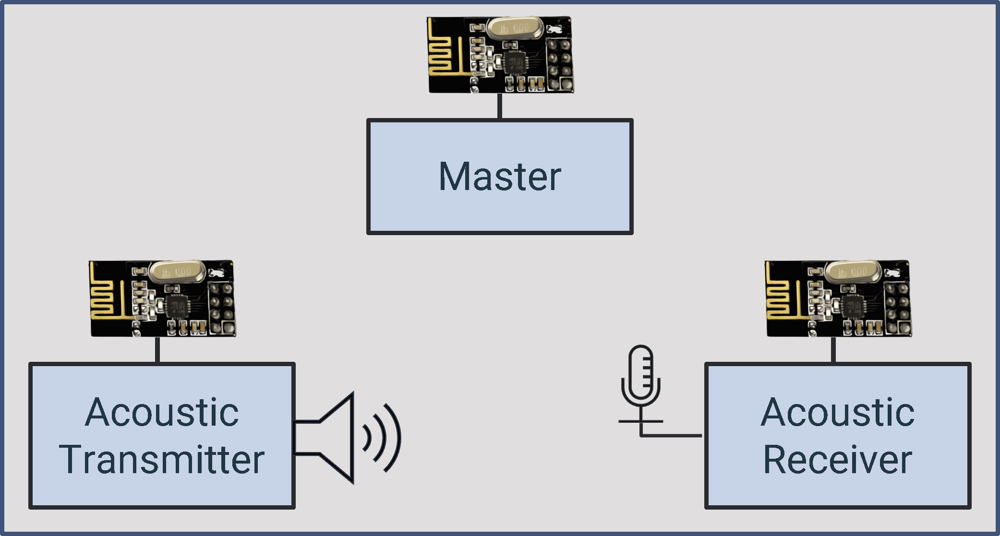
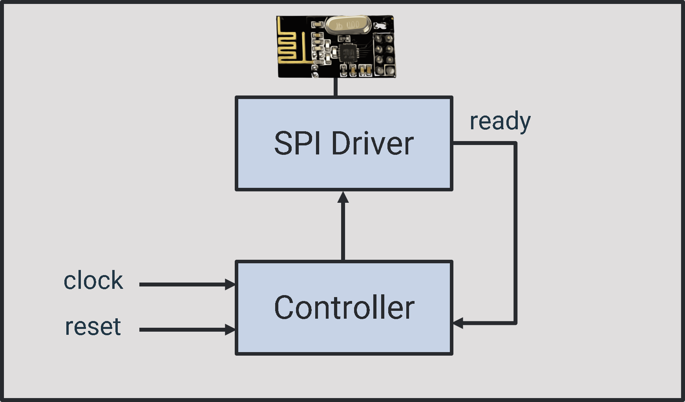
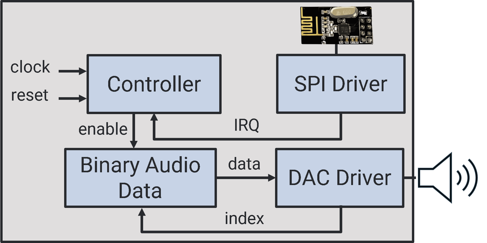

Real-Time FPGA-Based Indoor Localization
Accurate distance measurement using acoustic pulses and synchronized FPGAs.
Overview
Traditional localization methods suffer from poor accuracy or high complexity, especially in indoor settings. Indoor GPS fails due to lack of satellite visibility. Other technologies (UWB, Bluetooth, Wi-Fi, Optical) have trade-offs in cost, size, or range. This FPGA-based solution uses precise time-of-flight (ToF) measurements for audio signals and hardware-level processing for accurate low-cost, and real-time localization. The system consists of a master FPGA that periodically synchronizes two slave FPGAs. Audio signals are transmitted and received with a modulated Zadoff-Chu (ZC) sequence. The receiver estimates the ToF from the aquired signal from the transmitter using correlation-based detection.

Master FPGA Module
The system ensures continuous synchronization between the acoustic receiver and transmitter FPGAs. Once the master initiates a synchronization signal using the NRF24L01 module, both the acoustic transmitter and receiver are assumed to receive this trigger simultaneously. At this point, the transmitter begins sending the acoustic signal, and the receiver starts its time counter with a resolution of 100 ns (clock frequency = 100 MHz). This precise synchronization is crucial for accurately estimating the Time-of-Flight (ToF) of the acoustic signal, which is then used to compute the distance between the transmitter and receiver.

Acoustic Transmitter FPGA Module
Transmitter Module
Generates and sends ZC sequences to DAC and transducer.

A Zadoff-Chu sequence of length \( N = 16 \) and root \( M = 1 \) is used. These sequences are known for their sharp autocorrelation peak. The signal is modulated on a 40 kHz carrier and transmitted through ultrasonic speaker with the following parameters:
- Upsampling factor: 256
- Window size: 4096 samples
- Sampling frequency: 320 ksps

Acoustic FPGA Receiver
Receiver Module
Performs ADC sampling, demodulation, filtering, and correlation.

Analog Front-End
The analog signal chain includes a band-pass filter (centered at 40.6 kHz, BW = 24 kHz) followed by amplification. This chain is critical to reduce ambient noise and prepare the signal for digitization.

Demodulation and Correlation
The receiver demodulates the signal using I/Q separation and passes it through low-pass filters. Cross-correlation is performed with stored ZC sequences to find the peak location, which indicates signal arrival time.

Distance Estimation
The distance \( d \) is estimated using the ToF or signal delay \( \Delta t \) and speed of sound \( v_s \):
\[ d = v_s \cdot \Delta t \]With \( v_s \approx 345 \, \text{m/s} \), a time resolution of 1 µs (minimum delay from the audio ADCs) gives a lower bound on spatial resolution of \(\ge 0.345\) mm.
Experimental Setup
Testing used Nexys A7 and Basys3 boards, NRF24L01 for wireless sync, and ultrasonic transducers. The ZC signal was transmitted over air, and delay was captured for different distances.

Results
The receiver successfully captured signal peaks with synchronization jitter within ±1.2 µs. The system achieved consistent range estimates with Mean Absolute Error (MAE) under 1 cm.